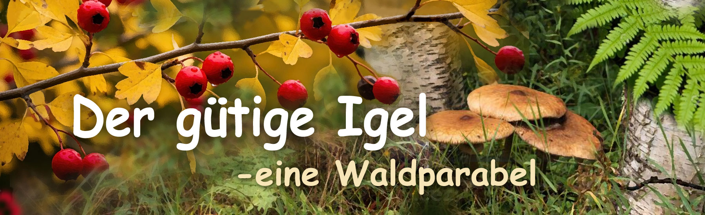

Märchen von Philomur, dem Kater
getreu aufgezeichnet von seinem treuen Bewunderer — Michel, der Rattenjunge

Willkommen in der Welt der Geschichten aus dem Wollknäuel heraus!
Der gütige Igel
Kapitel 1 | Kapitel 2 | Kapitel 3 | Kapitel 4
🍂Kapitel 1. Der Herbst und die kleine Maus
In jenem Jahr war der Herbst großzügig. Der Wald atmete Wärme und Süße: gelbe reife Birnen fielen sanft ins Moos, Äpfel erröteten im Sonnenlicht, und unter dem gefallenen Laub versteckten sich große, saftige Pilze. Die Luft war dick wie Honig und roch nach Reife und Frieden. Blätter fielen zu Boden wie Briefe, die niemand jemals lesen würde. Das Moos war feucht, aber noch warm. Der Wind — nicht kalt, sondern nachdenklich.
Unter den Wurzeln eines alten Birnbaums, in einem gemütlichen Bau, lebte ein Igel namens Tichon. Er lebte allein. Sein Leben war ruhig — nicht leicht, aber auch nicht schwer. Tichon wusste, dass der Wald hart sein konnte, doch er hegte keinen Groll gegen ihn. Er hatte einfach gelernt, in ihm zu leben.
Er hatte seinen Bau — sein Zuhause, seine Welt, einen Ort, an dem es nichts zu fürchten gab. Der Bau war gut gebaut: Der Eingang war schmal, sodass weder Wind noch ein neugieriger Blick eindringen konnten. Drinnen war es trocken und weich, ausgekleidet mit Moos und Blättern. Im hinteren Teil des Baus lag sein kleiner Vorratsraum. Dort hingen Bündel getrockneter Pilze, und ordentlich gestapelt lagen Nüsse, Wurzeln und Beeren. Auf einem separaten Regal lagen, nebeneinander auf trockenem Moos, glänzende Äpfel und wilde Birnen.
Tichon war ein sorgfältiger Haushalter. Jeden Tag ging er in den Wald, lief vertraute Pfade entlang und sammelte Pilze, Eicheln und Früchte. Er trug sie nach Hause, ordentlich auf seinen Stacheln aufgespießt — praktisch wie ein kleiner Wagen — und machte sich leise grunzend auf den Rückweg zu seinem Bau. Den Wald kannte er nicht aus Geschichten, sondern aus Spuren, Gerüchen und Geräuschen.
Er wusste, dass der Wald vieles sein konnte:
— sanft im Sommer,
— großzügig im Herbst,
— voller Hoffnung im Frühling,
— und hungrig und kalt im Winter.
Der Wald war zugleich freundlich und grausam, voller Gefahren, Jäger und Fallen. Deshalb war Tichon vorsichtig. Er vertraute niemandem — nicht weil er unfreundlich war, sondern weil er den Preis des Vertrauens kannte. Er bat nie um Hilfe — nicht aus Stolz, sondern weil er die Kosten der Abhängigkeit kannte. Er fürchtete sich nicht — nicht weil er mutig war, sondern weil Angst ein Luxus war, den er sich nicht leisten konnte.
Er war weise. Manchmal sprach Tichon bei der Arbeit gern mit sich selbst: „Solange der Herbst noch warm ist“, murmelte er, „muss ich mich beeilen. Bald fällt der Schnee — keine Früchte mehr, keine Pilze mehr. Im Winter wird alles bedeckt sein. Wer keine Vorräte hat, wird zugrunde gehen.“
Er blieb stehen, holte Luft und rückte einen Apfel zurecht, der von seinen Stacheln gerutscht war. „Wenn du allein lebst — verlasse dich auf dich selbst“, murmelte er. „Es gibt niemanden, den man fragen kann… und es ist auch nicht nötig. Jeder hat seine eigenen Sorgen. Arbeite und lebe. Angst hilft dir nicht, Mitleid ernährt dich nicht.“ Mit diesen Gedanken erreichte Tichon einen alten Himbeerstrauch.
Plötzlich hörte er ein Quieken. Dünn, scharf und kläglich. Er spitzte die Ohren. Unter den Blättern bewegte sich jemand. Vorsichtig schob Tichon das Gras beiseite und sah eine kleine Maus — klein, grau, mit glänzenden Augen und einer gebrochenen Pfote. Sie atmete schnell, quiekte leise und blickte sich um, als hoffe sie, dass jemand sie hören würde.
Tichon wusste: Für jeden Igel ist eine Maus eine Delikatesse. Die Welt ist hart und ungerecht, und jeder überlebt, so gut er kann — warum sie also nicht fressen? Doch Tichon hatte keinen Hunger. Und mehr noch — er wollte keinen Schmerz verursachen. Er blieb stehen, betrachtete den winzigen zitternden Körper und seufzte. Die kleine Maus starrte ihn ängstlich an. Und Tichon empfand Mitleid.
„Ach, Kleines…“, sagte er leise. „Die Welt ist grausam, aber nicht jeder muss es sein. Hab keine Angst — ich werde dir helfen.“ Vorsichtig hob er die Maus mit seiner Pfote auf, drückte sie an seine Brust und trug sie in den Bau. Drinnen legte er sie auf weiches Moos, gab ihr einen Tropfen Wasser, ein Stück süßen Apfel und verband die Pfote mit einem dünnen Grashalm.
Tichon tat einfach, was sich richtig anfühlte. Er wusste: Güte ist weder Schutz noch Belohnung, und nicht jeder wird sie schätzen. Aber wenn du gütig sein kannst — sei gütig. Nicht für jemand anderen. Für dich selbst. Der Abend kam.
Die Sonne sank, kühle Luft kroch durch den Wald, und der Wind raschelte in den Blättern. Und im warmen Bau unter den Wurzeln des alten Birnbaums roch die Luft nach Äpfeln und Kräutern. Zwei kleine Wesen schliefen Seite an Seite, zu einer Kugel zusammengerollt.
Zum Seitenanfang🐭 Kapitel 2. Die undankbare kleine Maus
Das Leben in Tichons Bau war für Schurik leicht und friedlich. Warmes Moos, süße Beeren, Nüsse und Wurzeln — alles, was sich ein kleines Wesen wünschen konnte, um Angst und Schmerz zu vergessen. Seine Pfote war verheilt, und bald lief und sprang er wieder voller Energie und Neugier.
Tichon kümmerte sich um ihn. Er stellte keine Fragen, hielt keine Vorträge, erwartete keinen Dank — er teilte einfach, was er hatte. Er gab, und er freute sich, wenn Schurik mit Appetit aß. Für Tichon war Güte so natürlich wie das Atmen. Doch Schurik verstand das nicht.
Manchmal, wenn er Tichon ansah, fühlte er sich unruhig. Sein kleiner Verstand konnte einen einfachen Gedanken nicht begreifen : Warum sollte jemand Gutes tun, wenn er weder Belohnung noch Lob dafür bekommt? Manchmal dachte Schurik: „Vielleicht ist Tichon alt und schwach und hat Angst vor mir. Oder er ist einfach töricht. Oder vielleicht will er nur rechtschaffen erscheinen, damit ihn alle bewundern. Oder… vielleicht füttert er mich, um mich später zu fressen?“ Solche Gedanken summten in seinem Kopf und ließen ihm keine Ruhe.
Tichon war ruhig, sanft und still — und für ein verängstigtes Herz kann Ruhe gefährlich erscheinen.
Eines Tages beschloss Schurik, dass es Zeit war zu gehen. Die Stille und Wärme von Tichons Bau waren ihm langweilig geworden. Er sehnte sich nach Abenteuern, nach Freiheit, nach etwas Neuem. Er sagte sich, er schulde niemandem etwas — er sei klug, unabhängig und frei. Doch Nahrung war natürlich notwendig, denn der Wald war kalt, und der Hunger ist immer stärker als das Gewissen.
Als Tichon fort war, fand Schurik einen kleinen Beutel und begann, die besten Früchte auszuwählen — die reifsten, süßesten, glänzendsten. Er knabberte an jeder Birne, jedem Apfel und jeder Nuss, probierte und entschied, was er behalten wollte. Das Leckerste kam in seinen Beutel; den Rest warf er achtlos beiseite. Er hatte es nicht eilig — Tichon kehrte immer spät zurück, und sein Bau war nie verschlossen. Als der Beutel bis zum Rand gefüllt war, schulterte Schurik ihn und ging — ohne sich umzusehen.
Er dankte Tichon nicht, verabschiedete sich nicht. Er dachte: „Warum sollte ich? Ich brauche ihn nicht mehr. Ich werde ihn nie wiedersehen.“ Später an diesem Tag, als Tichon zurückkehrte, sah er, dass die Maus verschwunden war. Das machte ihn nicht traurig — er wusste, dass Schurik jung und unruhig war und sich nach Freiheit sehnte. Doch als er in seine Vorratskammer blickte, erstarrte er. Halb angefressene Äpfel, angenagte Birnen, aufgebrochene Nüsse — alles lag über den Boden verstreut, vermischt mit Moos und Erde. Alles, was er so sorgfältig für den langen Winter gesammelt hatte, war verdorben.
Tichon setzte sich schweigend an den Eingang und betrachtete die Reste seiner Arbeit. Er wusste, dass er nichts mehr retten konnte. Der Winter war bereits nahe. Er stand auf, klopfte das Stroh ab, bedeckte den Eingang mit Blättern und ging zurück in den Wald, in der Hoffnung, noch etwas zu finden. Doch der Wald hatte sich verändert. Jeden Tag lag der Schnee höher, der Boden wurde härter, und es gab keine Beeren, Pilze oder Eicheln mehr.
Tichon verstand — ein langer, kalter Winter stand ihm bevor. Doch er wurde nicht wütend. Weder auf Schurik noch auf sich selbst. Er seufzte nur und dachte still: „Er ist noch klein. Unvernünftig. Er hat nicht verstanden, was er getan hat. Wütend zu werden würde mir nur die Stimmung verderben. Wozu?“
Er bereute nicht, ihn gerettet zu haben.
Er erwartete keinen Dank.
Er sagte sich einfach:
„Ich habe getan, was ich für richtig hielt.
Der Rest — wird sein, wie er sein muss.“
❄️ Kapitel 3. Ein unerwarteter Fund
Der Winter war hart. Der Schnee lag dick und schwer wie eine weiße Decke der Stille. Der Wind sang nicht — er stöhnte und heulte wie ein hungriger Wolf, der zwischen den schlafenden Bäumen umherstreift. Dünn und erschöpft wanderte Tichon durch den Wald, fror. Er blickte in Höhlen und Spalten und suchte nach etwas Essbarem. Seine Vorräte waren längst aufgebraucht.
Tichon aß wenig, bewegte sich langsam — und je langsamer er sich bewegte, desto kälter wurde ihm. Den ganzen Tag fand er vielleicht ein paar gefrorene Beeren oder einige alte Nüsse. Der Wind riss die letzten trockenen Blätter von den Bäumen, und der Schneesturm verbarg selbst die kleinsten Spuren von Leben unter dem Schnee. Keine Pilze, keine Eicheln, keine Insekten — nur die weiße Stille des gefrorenen Waldes und das Knarren seiner eigenen Schritte.
Es war der härteste Winter in Tichons Leben. Er erinnerte sich an die Wärme des Herbstes: an die leuchtenden Äpfel in seiner Vorratskammer, den Duft von trockenem Gras, die Geborgenheit seines Baus. Doch Erinnerungen konnten keinen leeren Magen füllen. Kalt und erschöpft machte er sich auf den Heimweg, als er plötzlich im Schnee vor sich etwas Kleines und Graues bemerkte. Zuerst dachte er, es sei ein Tannenzapfen — vielleicht ein glücklicher Fund, vielleicht eine Mahlzeit. Doch als er sich näher beugte, erstarrte er. Es lebte. Ein winziges, verletztes, zitterndes Wesen. Und als er den Schnee beiseiteschob, stockte ihm der Atem. Es war Schurik.
Die kleine Maus lag reglos da, ihr Fell zerzaust, ihr Körper von den Krallen eines Vogels gezeichnet. Sie fiepte nicht mehr und rief nicht um Hilfe — sie war zu schwach, um einen Laut von sich zu geben. Sie fror, sie starb langsam und war völlig allein. Tichon stand lange da und betrachtete sie. Er erinnerte sich an die angenagten Birnen, die verdorbenen Äpfel, an Hunger und Not, die lange vor dem Winter begonnen hatten.
Er hätte sich abwenden können. Er hätte sagen können: „Du hast es selbst so gewählt.“ Niemand hätte ihm Vorwürfe gemacht. Doch Tichon fühlte keinen Zorn. Nur Mitleid — still, warm und beständig, wie eine kleine Flamme im Schnee. Er verstand: Wenn er Schurik dort liegen ließ, würde die kleine Maus den Morgen nicht mehr erleben.
Schurik öffnete leicht die Augen. Sein Blick war matt und trüb wie Eis. Er sah Tichon — und hatte keine Angst. Er konnte nicht sprechen, nur lautlos weinen, und seine Tränen gefroren auf seinen Wangen zu kleinen Kristallen. Tichon beugte sich hinab, hob ihn vorsichtig auf, drückte ihn an seine Brust, um ihn zu wärmen, und trug ihn zurück in seinen Bau.
Die ganze Nacht schlief er nicht. Er wärmte Schurik mit seinem Atem, verband seine Wunden, gab ihm Wasser und die letzten Krümel Nahrung und summte leise ein altes Schlaflied — nicht für Schurik, sondern für die Stille selbst.
Tage vergingen — lang, schwer und voller Sorge. Allmählich begann Schurik sich zu erholen. Er konnte kriechen, dann wieder laufen, und sein Fell wurde erneut weich und glänzend. Doch Tichon wurde schwächer. Nächte voller Hunger und eisiger Kälte hatten ihre Spuren hinterlassen. Gegen Ende des Winters wurde er krank, litt an schwerem Husten und konnte kaum noch von seinem Mooslager aufstehen.
Und doch lächelte er selbst dann, halb im Schlaf und fiebrig, manchmal — weil er neben seinem eigenen Herzschlag noch einen zweiten hören konnte. Und das bedeutete: Er hatte das Richtige getan.
Zum SeitenanfangKapitel 4. 🐁Die Nuss der Güte🦔
Tichon wusste — seine Kräfte schwanden. Er klagte nicht und rief nicht um Hilfe. Wen hätte er rufen sollen? Er hatte sein Leben ruhig und ehrlich gelebt, und nun nahm er alles an, wie es war.
Zu dieser Zeit war Schurik bereits vollkommen gesund. Er war wieder schnell — lebhaft und verspielt. Er huschte durch den Bau, warf Nussschalen umher, spähte in jede Ecke, fiepte, rannte, lachte — und bemerkte kaum Tichon, der auf seinem Mooslager lag.
Tichon beobachtete ihn mit einem sanften Lächeln. Er wusste — Schurik würde bald gehen. Sobald das Sonnenlicht auf dem schmelzenden Eis zu glitzern begann, würde die Maus den Ruf der Freiheit spüren und wieder dem Leben entgegenlaufen.
Er fühlte weder Zorn noch Traurigkeit. Er verstand: So ist der Lauf der Dinge — die Jungen müssen vorwärtsgehen. Er hatte Schurik liebgewonnen, und selbst seine ruhelose Energie störte ihn nicht mehr. Im Gegenteil — sie wärmte den Bau, erinnerte daran, dass das Leben noch in der Nähe war.
Und eines Morgens erwachte Tichon — in Stille. Der Bau war leer. Schurik war fort. Wieder. Ohne ein Wort. Tichon seufzte nicht vor Kummer — nur vor Frieden. „Er lebt“, dachte er. „Das ist das Wichtigste.“ Doch die Stille fühlte sich nun schwerer und kälter an. Er schloss die Augen und lauschte dem Atem der Erde.
Währenddessen lief Schurik einen tauenden Pfad entlang. Die Sonne funkelte auf dem Schnee, Eiszapfen glitzerten wie Kristallsaiten, und der ganze Wald schimmerte vor Klang und Licht. Schurik freute sich über den Frühling. Doch ein Gedanke, scharf und hartnäckig wie ein Dorn in seinem Fell, ließ ihn nicht los. Immer wieder sah er Tichon vor sich — alt, krank, still und schweigend. Denjenigen, der ihn zweimal gerettet hatte. Er versuchte, mit sich selbst zu streiten: „Er ist alt. Er hätte ohnehin nicht überlebt. Ich bin frei, ich schulde ihm nichts. Er hat entschieden, mir zu helfen — das war seine Entscheidung. Und ich entscheide mich für das Leben. Für die Freiheit. Für meinen eigenen Weg.“ Doch diese Worte brachten ihm keinen Frieden.
Er war umhergewandert, ohne Ziel — und schließlich, ganz zufällig, gelangte er genau an den Ort zurück, an dem er einst im Schnee gelegen hatte. An den Ort, an dem sein Leben beinahe geendet hätte. Und dort, auf einem Stück aufgetauten Bodens, lag ein großer Zedernzapfen — schwer, voller süßer Nüsse, als hätte der Frühling selbst ihn dort hingelegt.
Schurik schob den Zapfen. Schwer rollte er vorwärts. Er schob weiter — langsam, hartnäckig, keuchend vor Anstrengung. Sein Fell klebte vom Schweiß, seine Pfoten zitterten — doch er hörte nicht auf. Endlich — der Bau. Der vertraute Eingang unter dem alten Birnbaum. Der Zapfen passte kaum hinein.
Schurik nahm einige Nüsse heraus, knackte sie so, wie es der Igel früher getan hatte, kochte eine Tasse duftenden Tee aus getrockneten Kräutern und den letzten Tropfen Honig, die am Boden des leeren Glases klebten, und stellte sie leise neben das Mooslager.
Tichon öffnete langsam die Augen. Ihre Blicke trafen sich.
Keine Worte.
Tichon verstand. Tränen — nicht aus Schmerz, sondern aus Freude — füllten seine Augen. Schwach hob er die Pfote, und Schurik schmiegte sich an ihn. Der Bau roch nach Pinienkernen und Frühling. Draußen flüsterte das Schmelzwasser zwischen den Wurzeln. Das Leben kehrte in den Wald zurück.
Tichon schloss die Augen.
Er wusste — alles war gut.
Er hatte sein Leben mit Sinn gelebt.
Die Samen der Güte hatten Wurzeln geschlagen.
Und eines Tages würde ein großer, mächtiger Baum der Großzügigkeit und des Mitgefühls in seinem geliebten Wald wachsen.
Ende
😊 Zum Seitenanfang
🌟 Fragen und Aufgaben für junge Leserinnen und Leser
1. Worum geht es in diesem Kapitel? Erzähle die Geschichte in 3–5 Sätzen.
2. Wer ist die Hauptfigur in diesem Kapitel? Beschreibe sie: Aussehen, Charakter und Stimmung.
3. Wenn du der Hauptfigur eine Frage stellen könntest, welche wäre das? Schreibe sie auf — und versuche, sie aus der Sicht der Figur zu beantworten.
4. Welche Entscheidung hat jemand in diesem Kapitel getroffen? Stimmst du ihr zu? Was würdest du anders machen?
5. Finde 5–10 neue Wörter im Kapitel. Schreibe sie auf, schlage ihre Bedeutung nach und bilde mit jedem Wort einen Satz.
6. Wähle deine Lieblingsstelle oder deinen Lieblingsmoment. Warum ist er dir besonders aufgefallen?
7. Stell dir eine kurze zusätzliche Szene vor, die als Nächstes passieren könnte. Schreibe 3–6 Zeilen Dialog.
8. Gib diesem Kapitel einen neuen Titel. Erkläre, warum du ihn gewählt hast.
9. Wie hat dich dieses Kapitel fühlen lassen? Wähle drei Wörter (zum Beispiel: neugierig, besorgt, glücklich, überrascht) und erkläre deine Wahl.
10. Wähle eine Szene, die du am besten in Erinnerung behalten hast. Zeichne sie und füge kleine Details hinzu, die dir wichtig erscheinen.